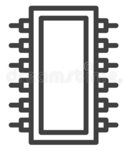

First steps in bare-metal programming using UEFI – part 3

This series of articles describes how to start writing bare-metal programs for modern PCs, using Linux as the development platform. By “bare metal” I mean without any operating system: the application will be run directly by the computer’s EFI firmware.
In the first article in the series I
described how to compile, link, and transform a C program into a PE32+
executable named test.efi that EFI understands.
In the second article I explained how to
install test.efi into an EFI system partition (ESP) on a
hard drive. To avoid clashes with any real operating system, I suggested
doing this on a spare hard drive, or on a virtual machine.
In this article I’ll explain how to create a bootable DVD drive or
USB flash drive from test.efi. You’ll be able to boot this
on a real or virtual machine without installing anything on a hard
drive. Although booting from removable media is a safe and
straightforward process, not requiring any changes to the test machine,
most computers boot a lot more quickly from a hard drive than from
removable media. That’s an important consideration if you’re developing
a substantial EFI application (a new operating system, for example).
Building a DVD image as a .iso file is a great way to
test an EFI application using VirtualBox. Every time the VirtualBox VM
starts, it re-reads the virtual DVD, so you can build a new image (using
a script or Makefile) and re-test quickly. Copying the DVD image to a
flash drive is a convenient and safe way to test on a real computer,
albeit not so rapidly.
Prerequisites
To follow the steps in this article you’ll need MSDOS floppy drive
tools like mformat and mcopy. Yes, I did say
“floppy drive” – I’ll explain why later. For Debian systems these
utilities are in the mtools package. You’ll also need
something that can create an ISO9660 filesystem in El-Torito format (see
below). I’ve had most success with xorriso in
mkisofs compatibility mode, but mkisofs itself
might work on some platforms.
Structure of a bootable DVD
Here’s the problem with booting from a DVD using EFI firmware…
In the previous article I explained how, at boot time, a PC’s EFI firmware looked for an EFI system partition (ESP), which had to be formatted as a DOS/Windows VFAT filesystem. However, DVD media is conventionally formatted as an ISO9660 filesystem. How do we reconcile these conflicting requirements for filesystem type?
There are various ways to do this, and EFI firmwares vary in the features they offer in this regard. However, I believe the most fundamental, and best-supported, approach is defined by the El-Torito specification. El-Torito is an extension to the ISO9660 filesystem, which allows for floppy drive images to be embedded in the filesystem. At the very beginning of the ISO9660 filesystem is a boot catalog, which states the types and locations of the floppy images. The flexibility to include multiple floppy images exists, I believe, to allow the same DVD to boot on different architectures.
Embedding a floppy drive image in a DVD looks bizarre today but, when EFI was first developed, PCs still had physical floppy drives. Given an El-Torito DVD, the firmware just finds the appropriate floppy drive image, and loads it into memory as if it were booting a real floppy.
What goes in the floppy drive image? Nothing more or less than the
ESP. That is, the floppy image contains a VFAT filesystem, with our EFI
application in a particular directory. The boot process is exactly as I
described in that earlier article, except that EFI gets its ESP from a
virtual floppy drive, rather than a hard drive. This is why I wanted to
explain how to boot from a hard drive, before booting from removable
media. The data structure we construct here is the same ESP as in the
previous article, but on
a floppy disk image rather than a hard drive. The only additional step
in this article is wrapping an ISO9660 filesystem around the floppy
image.
Setting up an El-Torito ISO9660 image is, I have to admit, fiddly. However, the steps are easy to automate, so building a new image when you modify the application is almost instantaneous in practice.
A difference between booting from a floppy drive, and a floppy image in a DVD, is that the DVD can contain much more data than a floppy. The test application I’ve been using in these articles fits easily onto a floppy, and would boot from a floppy drive if you could find a computer that still has one. However, EFI makes the whole DVD available to the application, if it needs all the additional data – and it will, of course, if the application we’re developing is an operating system installer.
Creating the bootable DVD
We’ll need the test application test.efi from the first
article.
- Create an empty file large enough to contain the floppy image:
dd if=/dev/zero of=test.img bs=1024 count=1024.
In principle, El-Torito says that the file should be the size of a standard floppy (e.g., 1.44Mb), but I’ve found that EFI firmwares aren’t that fussy. - Format this file as a DOS floppy, and create the ESP:
mformat -i test.img -v EFIBOOT
mmd -i test.img ::/EFI ::/EFI/BOOT
mcopy -i test.img /path/to/test.efi ::/EFI/BOOT/BOOTX64.EFI - Create an empty directory (or one that contains files the EFI
application will need at runtime), and copy the floppy image into
it:
mkdir img/
cp test.img img/ - Create the DVD image, embedding the floppy image:
xorriso -as mkisofs -V efitest -o test.iso\
-eltorito-platform efi -e test.img -no-emul-boot img/
This final step creates a DVD image containing only two files, apart
from any that were already present in the img/ directory:
the floppy image test.img, and the boot catalog
boot.catalog, which the xorriso utility
creates automatically.
Testing the bootable DVD with VirtualBox
You could burn the DVD image to a physical DVD, but it’s hard to find
a computer with a DVD drive these days. VirtualBox, however, will
virtualize a DVD from the .iso file created by
xorriso.
You can create a new VM for testing, or use an existing one. If you use an existing one, you’ll need to take steps to ensure that the VM boots from the new DVD in preference to an existing virtual hard drive. Whether you use an existing VM or create a new one, it must be a 64-bit type, and it must have EFI enabled – but not secure boot.
Booting the VM should run the EFI test application, and the output should be the same as I showed in the previous article.
Creating a bootable USB flash drive
This final step is easy, and it’s the safest way to test a bare-metal
EFI program on a real computer. Just use a utility like dd
to copy the DVD image test.iso to the USB device. For
example (as root):
dd if=test.iso of=/dev/sdc Naturally, you should take great trouble to ensure that you have the
right device – don’t use sdc blindly just because that’s
what works for me.
Then eject the USB device, and reboot. At boot time, tell the boot manager to boot from the USB drive. That’s it.
Closing remarks
The last three articles have been heavy going, I suspect, and I’ve skipped a lot of technical detail that I might have included. I’ve hardly even scratched the surface of how to write the actual EFI application, which is where the real fun starts.
The process of building an ISO DVD or flash image from the test application is lengthy but, once scripted or embedded in a Makefile, it hardly takes any time at all. When I use VirtualBox for testing, the modify-build-test cycle is surprisingly rapid. Of course, testing on real hardware takes a bit longer.
There are some who would argue, I imagine, that what we’ve been doing here isn’t “real” bare-metal programming. After all, even though there’s no operating system, the EFI firmware is doing some of the heavy lifting. While this is a fair criticism, I suspect the only way to get closer to the metal than this, would be to re-flash the UEFI firmware with our own code – something I suspect only motherboard designers have the tools and expertise to do. Booting an application using EFI is as close to bare metal as most of us need to get.
Have you posted something in response to this page?
Feel free to send a webmention
to notify me, giving the URL of the blog or page that refers to
this one.